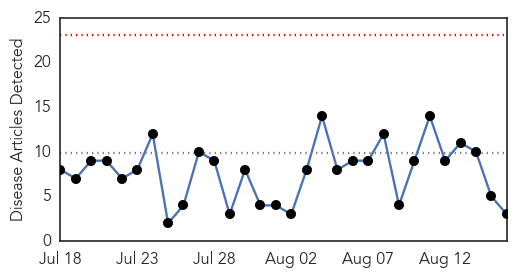
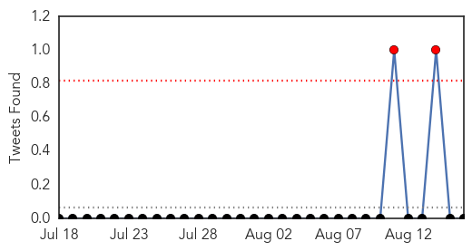
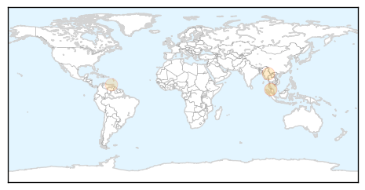

Dengue Fever
30-Day Web Trend
0 alerts, 0 warnings

30-Day Twitter Trend
0 alerts, 0 warnings

Article Locations
Article Confidences
Top Articles:
Top Tweets:
-
No tweets found for Aug 16, 2015
Unknown
30-Day Web Trend
0 alerts, 0 warnings

30-Day Twitter Trend
3 alerts, 0 warnings

Article Locations

Article Confidences

Top Articles:
- 0.959
- Frog disease spreads across the UK
- 0.938
- Initial MERS test proves negative for EAMC patient
- 0.911
- Glaxo says meds made at drug plant that was closed over Legionnaires' bacteria are safe
- 0.897
- Parents urged to get kids flu vaccine
- 0.865
- Bird flu spreads to third location
- 0.831
- Taitung officials worried over rabies
- 0.760
- Lithuania struggling to curb African Swine Fever
- 0.707
- The Caledonian-Record
- 0.687
- Manhunt after two assailants shoot police officer near Paris
- 0.687
- Iraqi panel wants Maliki to ‘face court over fall of Mosul’ to IS group
- 0.687
- Huge crowds to demand Rousseff’s impeachment in day of protests
- 0.687
- Ecuador declares state of emergency as mighty Cotopaxi stirs
- 0.679
- Hillary Clinton hits back at Jeb Bush on rise of IS group
- 0.671
- Germ-zapping Robots: Hospitals Combat Superbugs
- 0.643
- Government starves patientsThe Nation Online
- 0.590
- Malawi Nyasa Times – Malawi breaking news in Malawi
- 0.553
- Diana Chapoterera: Zim’s only ‘black’ podiatrist
- 0.546
- A Faster Way To Stop Spread Of Food Illness
- 0.542
- County sees influx in livestock virus
- 0.516
- Scottish mental health units ‘struggling to cope’
Top Tweets:
- 0.683
- RT: Llegará el momento en que la gente se obstine de las peliculas de superheroes, ahora y q el Hombre Hormiga, que hace? Se co…
- 0.664
- RT: "Todos llevamos un niño dentro" Bueno, esto es twitter, andá a hacer el ridículo en fb. Volá de acá.